<!DOCTYPE html>
<html lang="zh-tw">
    
<head>
    <meta charset="UTF-8">
    <meta name="viewport" content="width=device-width, initial-scale=1">
    <meta name="generator" content="Yee的補坑筆記">
    <title>Laravel之旅 - 生成Migration的懶人包 - Yee的補坑筆記</title>
    <meta name="author" content="Yee">
    
        <meta name="keywords" content="laravel,docker,">
    
    
    
    <script type="application/ld+json">{"@context":"http://schema.org","@type":"BlogPosting","author":{"@type":"Person","name":"Yee","sameAs":["mailto:amung966w@gmail.com"],"image":"yee.jpeg"},"articleBody":"在前一週，我們介紹了migration的用法與好處，\n但… \n舊有的專案有好幾十張表，該不會需要一一建立吧…\n\n當然是不用，\n有工具可以將sql檔，\n輸出成laravel的migration檔案，\n需要安裝 mysql workbanch！\n\n本文所採用的環境\b\n\nMax OSX 10.15\nDocker version 19.03.5\nLaradock\nLaravel 6.0 以上 (5.8適用)\nMysql Workbanch 8.0.19\n\n本系列不從部署環境開始說起，\n部署環境可參考以下\n\nLaradock - 更快速優雅的建立Laravel\nInstall Apache, MySQL, PHP on macOS Catalina 10.15\nWin10請服用XAMPP，非專業版的Win裝docker會比較麻煩，不過也可以試試～～\n\n\n本系列文章Laravel之旅 - 認識Laravel資料夾結構Laravel之旅 - 善用Migration管理資料表\n\n還沒安裝的請點這裡～～ Mysql Workbanch\n裝好的我們就開始吧！！！\n先到這個github下載外掛 MySQL Workbench Export Laravel 5 Migrations Plugin\n這個外掛是用py寫的，至於版本作者並未說明，\n下載好了之後，我們打開Mysql Workbanch，\n找到安裝外掛的地方，選擇剛剛下載的py，等他安裝一下，接著會跟你說裝好了，接下來的步驟是因為平常沒有在使用mysql workbanch，\n因此有以下的步驟，如果平常有在使用，則可以跳到輸出的頁面，\n建立一個Model，出現工作區域的介面，並選選擇匯入，選擇sql檔，下一步到匯入完成完成後，就可以在工作區域看到我們所匯入的資料表了，接著我們就可以來匯出轉成migration型態的檔案拉！\n到tools-&gt;catalog-&gt;Export Laravel 5 Migration可以在紅色框框中瀏覽輸出的樣子，不知道是不是mac版的關係，\n選擇輸出資料夾的地方，有夠難點的，可以點底線的右邊比較容易讓視窗打開，\n這裡不選擇資料夾的話，會不知道輸出到哪裡去了，我實在是找不到阿…\n選完資料夾後完成即可，\n到剛剛的資料夾就可以看到輸出的檔案，打開其中一個檔案來看一下，是不是跟我們上週的觀察的user很像啊～～～\n左邊是這次輸出的檔案，他的sql來自右邊的migration匯入，\n有了這項工具後，可以無痛的建立舊專案的migration摟！！！\n\n後記\n正要做一個新的專案時，老闆將DB規劃好後丟給我，\n開工的我默默地建migration，\n老闆突然問說，這沒工具嗎！？\n我沈默了一下… 我居然… 沒有想到要去google看看…\n接著我就找到這個github了，\n然後就快速的建立migration～～～\n下次記得要先google看看有沒有懶人法或工具啊啊啊…\n","dateCreated":"2020-05-09T21:00:38+08:00","dateModified":"2020-05-09T21:55:37+08:00","datePublished":"2020-05-09T21:00:38+08:00","description":"在前一週，我們介紹了migration的用法與好處，\n但… \n舊有的專案有好幾十張表，該不會需要一一建立吧…","headline":"Laravel之旅 - 生成Migration的懶人包","image":[],"mainEntityOfPage":{"@type":"WebPage","@id":"https://yeeinhole.github.io/2020/05/09/laravel-2-1/"},"publisher":{"@type":"Organization","name":"Yee","sameAs":["mailto:amung966w@gmail.com"],"image":"yee.jpeg","logo":{"@type":"ImageObject","url":"yee.jpeg"}},"url":"https://yeeinhole.github.io/2020/05/09/laravel-2-1/","keywords":"w3HexSchool, laravel"}</script>
    <meta name="description" content="在前一週，我們介紹了migration的用法與好處， 但…  舊有的專案有好幾十張表，該不會需要一一建立吧…">
<meta property="og:type" content="blog">
<meta property="og:title" content="Laravel之旅 - 生成Migration的懶人包">
<meta property="og:url" content="https://yeeinhole.github.io/2020/05/09/laravel-2-1/index.html">
<meta property="og:site_name" content="Yee的補坑筆記">
<meta property="og:description" content="在前一週，我們介紹了migration的用法與好處， 但…  舊有的專案有好幾十張表，該不會需要一一建立吧…">
<meta property="og:locale" content="zh_TW">
<meta property="og:image" content="https://yeeinhole.github.io/image/laravel-2-1/w1.png">
<meta property="og:image" content="https://yeeinhole.github.io/image/laravel-2-1/w2.png">
<meta property="og:image" content="https://yeeinhole.github.io/image/laravel-2-1/w3.png">
<meta property="og:image" content="https://yeeinhole.github.io/image/laravel-2-1/w4.png">
<meta property="og:image" content="https://yeeinhole.github.io/image/laravel-2-1/w5.png">
<meta property="og:image" content="https://yeeinhole.github.io/image/laravel-2-1/w6.png">
<meta property="og:image" content="https://yeeinhole.github.io/image/laravel-2-1/w7.png">
<meta property="og:image" content="https://yeeinhole.github.io/image/laravel-2-1/w8.png">
<meta property="og:image" content="https://yeeinhole.github.io/image/laravel-2-1/w9.png">
<meta property="og:image" content="https://yeeinhole.github.io/image/laravel-2-1/w10.png">
<meta property="og:image" content="https://yeeinhole.github.io/image/laravel-2-1/w11.png">
<meta property="og:image" content="https://yeeinhole.github.io/image/laravel-2-1/m1.png">
<meta property="og:image" content="https://yeeinhole.github.io/image/laravel-2-1/m2.png">
<meta property="article:published_time" content="2020-05-09T13:00:38.000Z">
<meta property="article:modified_time" content="2020-05-09T13:55:37.394Z">
<meta property="article:author" content="Yee">
<meta property="article:tag" content="w3HexSchool">
<meta property="article:tag" content="laravel">
<meta name="twitter:card" content="summary">
<meta name="twitter:image" content="https://yeeinhole.github.io/image/laravel-2-1/w1.png">
    
    
        
    
    
        <meta property="og:image" content="https://yeeinhole.github.io/assets/images/yee.jpeg"/>
    
    
    
    
    <!--STYLES-->
    
<link rel="stylesheet" href="/assets/css/style-2lqfypdcngq7rgk11flmhgs30biseha2s4rv2frat5edalqervoqqqtncnuh.min.css">

    <!--STYLES END-->
    

    

    
        
    
</head>

    <body>
        <div id="blog">
            <!-- Define author's picture -->


    
        
            
        
    

<header id="header" data-behavior="4">
    <i id="btn-open-sidebar" class="fa fa-lg fa-bars"></i>
    <div class="header-title">
        <a
            class="header-title-link"
            href="/"
            aria-label=""
        >
            Yee的補坑筆記
        </a>
    </div>
    
        
            <a
                class="header-right-picture "
                href="#about"
                aria-label="打開鏈接: /#about"
            >
        
        
            
        
        </a>
    
</header>

            <!-- Define author's picture -->


        
    

<nav id="sidebar" data-behavior="4">
    <div class="sidebar-container">
        
            <div class="sidebar-profile">
                <a
                    href="/#about"
                    aria-label="閱讀有關作者的更多信息"
                >
                    
                </a>
                <h4 class="sidebar-profile-name">Yee</h4>
                
                    <h5 class="sidebar-profile-bio"><p>Hi 我是 Yee，常常不小心就掉進坑中…</p>
</h5>
                
            </div>
        
        
            <ul class="sidebar-buttons">
            
                <li class="sidebar-button">
                    
                        <a  class="sidebar-button-link "
                             href="https://yeeinhole.github.io/"
                            title="首頁"
                        >
                    
                        <i class="sidebar-button-icon fa fa-home" aria-hidden="true"></i>
                        <span class="sidebar-button-desc">首頁</span>
                    </a>
            </li>
            
                <li class="sidebar-button">
                    
                        <a  class="sidebar-button-link "
                             href="/all-categories"
                            
                            title="分類"
                        >
                    
                        <i class="sidebar-button-icon fa fa-bookmark" aria-hidden="true"></i>
                        <span class="sidebar-button-desc">分類</span>
                    </a>
            </li>
            
                <li class="sidebar-button">
                    
                        <a  class="sidebar-button-link "
                             href="/all-tags"
                            
                            title="標籤"
                        >
                    
                        <i class="sidebar-button-icon fa fa-tags" aria-hidden="true"></i>
                        <span class="sidebar-button-desc">標籤</span>
                    </a>
            </li>
            
                <li class="sidebar-button">
                    
                        <a  class="sidebar-button-link "
                             href="/all-archives"
                            
                            title="所有文章"
                        >
                    
                        <i class="sidebar-button-icon fa fa-archive" aria-hidden="true"></i>
                        <span class="sidebar-button-desc">所有文章</span>
                    </a>
            </li>
            
                <li class="sidebar-button">
                    
                        <a  class="sidebar-button-link "
                             href="/friend"
                            
                            title="友情連結"
                        >
                    
                        <i class="sidebar-button-icon fas fa-link" aria-hidden="true"></i>
                        <span class="sidebar-button-desc">友情連結</span>
                    </a>
            </li>
            
                <li class="sidebar-button">
                    
                        <a  class="sidebar-button-link "
                             href="#about"
                            
                            title="關於"
                        >
                    
                        <i class="sidebar-button-icon fa fa-question" aria-hidden="true"></i>
                        <span class="sidebar-button-desc">關於</span>
                    </a>
            </li>
            
        </ul>
        
            <ul class="sidebar-buttons">
            
                <li class="sidebar-button">
                    
                        <a  class="sidebar-button-link " href="mailto:amung966w@gmail.com" target="_blank" rel="noopener" title="Email">
                    
                        <i class="sidebar-button-icon fa fa-envelope" aria-hidden="true"></i>
                        <span class="sidebar-button-desc">Email</span>
                    </a>
            </li>
            
        </ul>
        
    </div>
</nav>

            
            <div id="main" data-behavior="4"
                 class="
                        hasCoverMetaIn
                        ">
                
<article class="post">
    
    
        <div class="post-header main-content-wrap text-left">
    
        <h1 class="post-title">
            Laravel之旅 - 生成Migration的懶人包
        </h1>
    
    
        <div class="post-meta">
    <time datetime="2020-05-09T21:00:38+08:00">
	
		    5月 09, 2020
    	
    </time>
    
        <span>分類 </span>
        
    <a class="category-link" href="/categories/Laravel/">Laravel</a>


    
</div>

    
</div>

    
    <div class="post-content markdown">
        <div class="main-content-wrap">
            <p>在前一週，我們介紹了migration的用法與好處，</p>
<p>但… </p>
<p>舊有的專案有好幾十張表，該不會需要一一建立吧…</p>
<a id="more"></a>
<p>當然是不用，</p>
<p>有工具可以將sql檔，</p>
<p>輸出成laravel的migration檔案，</p>
<p>需要安裝 mysql workbanch！</p>
<hr>
<p>本文所採用的環境<br></p>
<ol>
<li>Max OSX 10.15</li>
<li>Docker version 19.03.5</li>
<li>Laradock</li>
<li>Laravel 6.0 以上 (5.8適用)</li>
<li>Mysql Workbanch 8.0.19</li>
</ol>
<p>本系列不從部署環境開始說起，</p>
<p>部署環境可參考以下</p>
<ol>
<li><a href="https://yeeinhole.github.io/2020/01/27/laradock/">Laradock - 更快速優雅的建立Laravel</a></li>
<li><a href="https://coolestguidesontheplanet.com/install-apache-mysql-php-on-macos-catalina-10-15/" target="_blank" rel="noopener">Install Apache, MySQL, PHP on macOS Catalina 10.15</a></li>
<li>Win10請服用XAMPP，非專業版的Win裝docker會比較麻煩，不過也可以試試～～</li>
</ol>
<hr>
<p>本系列文章<br><a href="https://yeeinhole.github.io/2020/04/25/laravel-1/">Laravel之旅 - 認識Laravel資料夾結構</a><br><a href="https://yeeinhole.github.io/2020/04/25/laravel-2/">Laravel之旅 - 善用Migration管理資料表</a></p>
<hr>
<p>還沒安裝的請點這裡～～ <a href="https://www.mysql.com/products/workbench/" target="_blank" rel="noopener">Mysql Workbanch</a></p>
<p>裝好的我們就開始吧！！！</p>
<p>先到這個github下載外掛 <a href="https://github.com/beckenrode/mysql-workbench-export-laravel-5-migrations" target="_blank" rel="noopener">MySQL Workbench Export Laravel 5 Migrations Plugin</a></p>
<p>這個外掛是用py寫的，至於版本作者並未說明，</p>
<p>下載好了之後，我們打開Mysql Workbanch，</p>
<p>找到安裝外掛的地方，<br>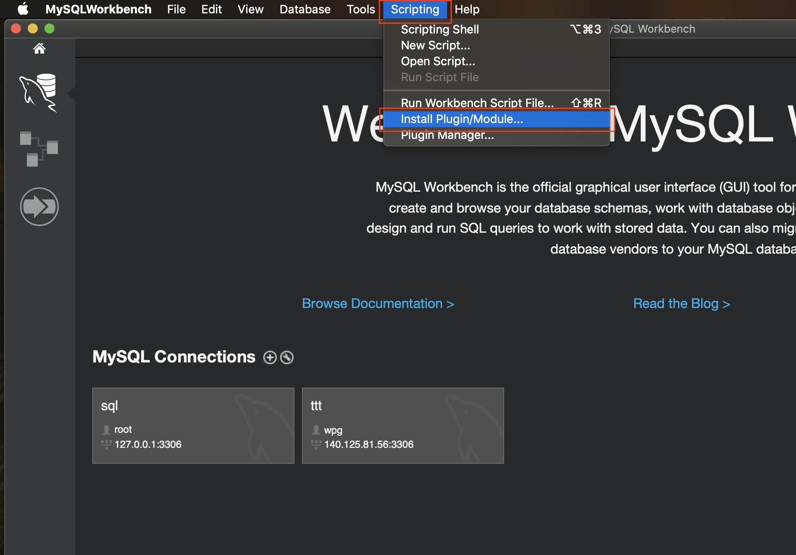<br>選擇剛剛下載的py，<br>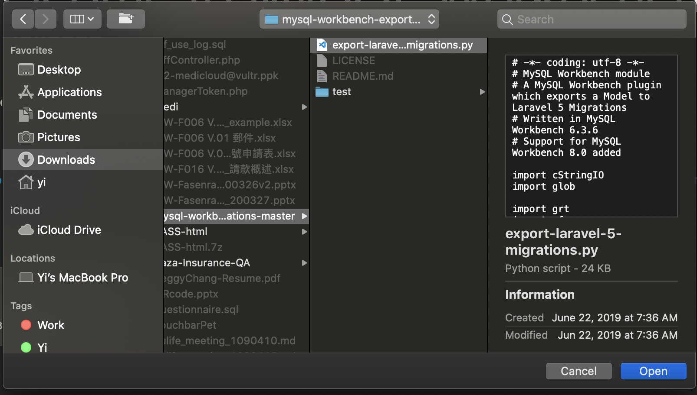<br>等他安裝一下，接著會跟你說裝好了，<br>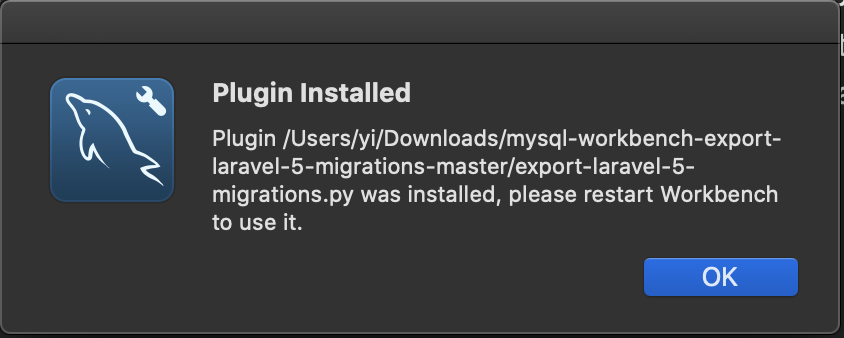<br>接下來的步驟是因為平常沒有在使用mysql workbanch，</p>
<p>因此有以下的步驟，如果平常有在使用，則可以跳到輸出的頁面，</p>
<p>建立一個Model，<br>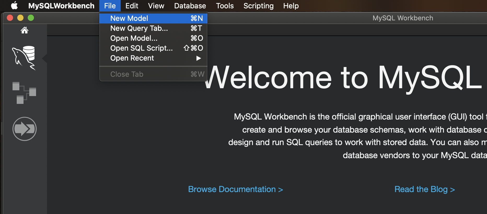<br>出現工作區域的介面，並選選擇匯入，<br>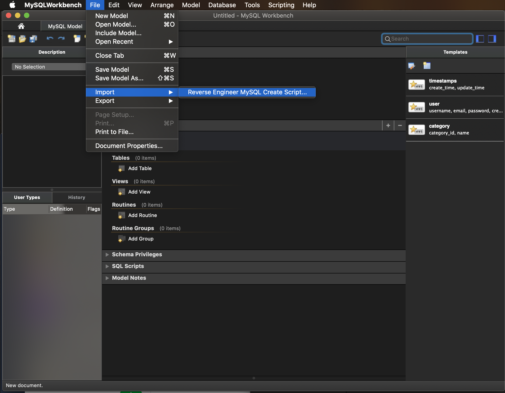<br>選擇sql檔，下一步到匯入完成<br>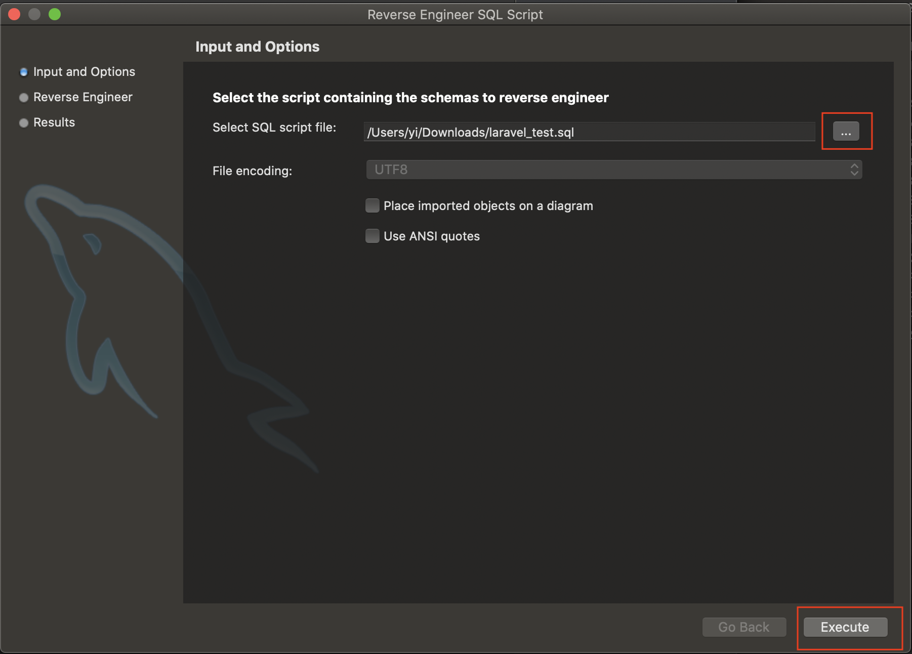<br>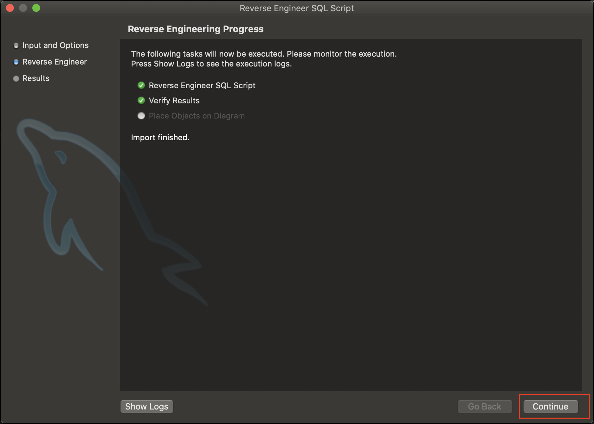<br>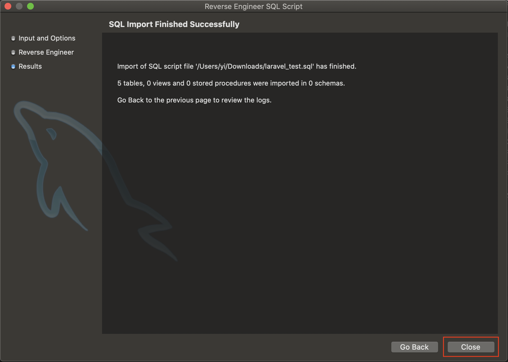<br>完成後，就可以在工作區域看到我們所匯入的資料表了，<br>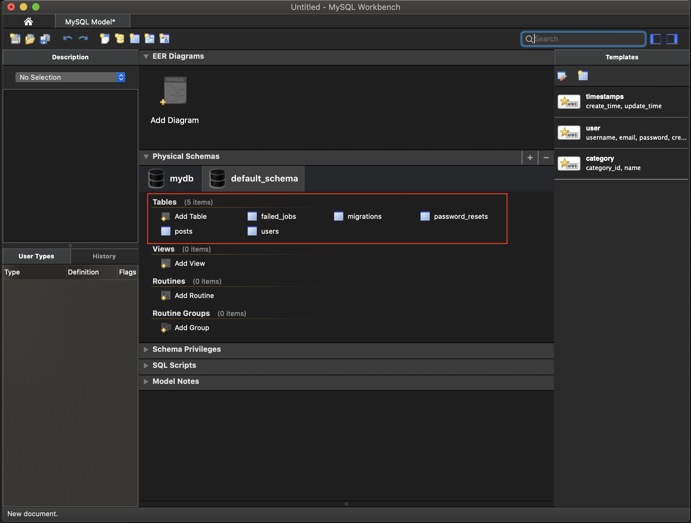<br>接著我們就可以來匯出轉成migration型態的檔案拉！</p>
<p>到tools-&gt;catalog-&gt;Export Laravel 5 Migration<br>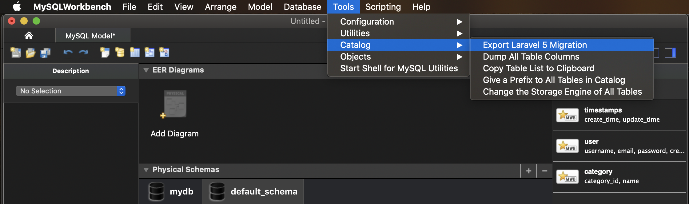<br>可以在紅色框框中瀏覽輸出的樣子，<br>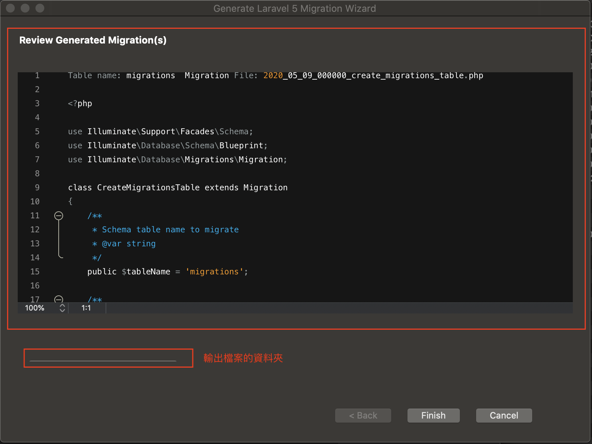<br>不知道是不是mac版的關係，</p>
<p>選擇輸出資料夾的地方，有夠難點的，可以點底線的右邊比較容易讓視窗打開，</p>
<p>這裡不選擇資料夾的話，會不知道輸出到哪裡去了，我實在是找不到阿…</p>
<p>選完資料夾後完成即可，</p>
<p>到剛剛的資料夾就可以看到輸出的檔案，<br>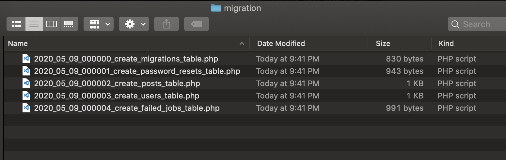<br>打開其中一個檔案來看一下，<br>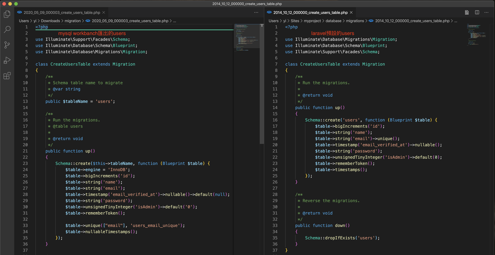<br>是不是跟我們上週的觀察的user很像啊～～～</p>
<p>左邊是這次輸出的檔案，他的sql來自右邊的migration匯入，</p>
<p>有了這項工具後，可以無痛的建立舊專案的migration摟！！！</p>
<hr>
<p>後記</p>
<p>正要做一個新的專案時，老闆將DB規劃好後丟給我，</p>
<p>開工的我默默地建migration，</p>
<p>老闆突然問說，這沒工具嗎！？</p>
<p>我沈默了一下… 我居然… 沒有想到要去google看看…</p>
<p>接著我就找到這個github了，</p>
<p>然後就快速的建立migration～～～</p>
<p>下次記得要先google看看有沒有懶人法或工具啊啊啊…</p>

            


        </div>
    </div>
    <div id="post-footer" class="post-footer main-content-wrap">
        
            <div class="post-footer-tags">
                <span class="text-color-light text-small">標籤</span><br/>
                
    <a class="tag tag--primary tag--small t-link" href="/tags/laravel/" rel="tag">laravel</a> <a class="tag tag--primary tag--small t-link" href="/tags/w3HexSchool/" rel="tag">w3HexSchool</a>

            </div>
        
        
            <div class="post-actions-wrap">
    <nav>
        <ul class="post-actions post-action-nav">
            <li class="post-action">
                
                    
                <a
                    class="post-action-btn btn btn--default tooltip--top"
                    href="/2020/05/17/laravel-3/"
                    data-tooltip="Laravel之旅 - DB的操作(1) DB Query builder"
                    aria-label="上一篇: Laravel之旅 - DB的操作(1) DB Query builder"
                >
                    
                        <i class="fa fa-angle-left" aria-hidden="true"></i>
                        <span class="hide-xs hide-sm text-small icon-ml">上一篇</span>
                    </a>
            </li>
            <li class="post-action">
                
                    
                <a
                    class="post-action-btn btn btn--default tooltip--top"
                    href="/2020/04/25/laravel-1/"
                    data-tooltip="Laravel之旅 - 認識Laravel資料夾結構"
                    aria-label="下一篇: Laravel之旅 - 認識Laravel資料夾結構"
                >
                    
                        <span class="hide-xs hide-sm text-small icon-mr">下一篇</span>
                        <i class="fa fa-angle-right" aria-hidden="true"></i>
                    </a>
            </li>
        </ul>
    </nav>
    <ul class="post-actions post-action-share">
        <li class="post-action hide-lg hide-md hide-sm">
            <a
                class="post-action-btn btn btn--default btn-open-shareoptions"
                href="#btn-open-shareoptions"
                aria-label="Diesen Beitrag teilen"
            >
                <i class="fa fa-share-alt" aria-hidden="true"></i>
            </a>
        </li>
        
            
            
            <li class="post-action hide-xs">
                <a
                    class="post-action-btn btn btn--default"
                    target="new" href="https://www.facebook.com/sharer/sharer.php?u=https://yeeinhole.github.io/2020/05/09/laravel-2-1/"
                    title="分享到 Facebook"
                    aria-label="分享到 Facebook"
                >
                    <i class="fab fa-facebook" aria-hidden="true"></i>
                </a>
            </li>
        
            
            
            <li class="post-action hide-xs">
                <a
                    class="post-action-btn btn btn--default"
                    target="new" href="https://twitter.com/intent/tweet?text=https://yeeinhole.github.io/2020/05/09/laravel-2-1/"
                    title="分享到 Twitter"
                    aria-label="分享到 Twitter"
                >
                    <i class="fab fa-twitter" aria-hidden="true"></i>
                </a>
            </li>
        
            
            
            <li class="post-action hide-xs">
                <a
                    class="post-action-btn btn btn--default"
                    target="new" href="https://plus.google.com/share?url=https://yeeinhole.github.io/2020/05/09/laravel-2-1/"
                    title="分享到 Google+"
                    aria-label="分享到 Google+"
                >
                    <i class="fab fa-google-plus" aria-hidden="true"></i>
                </a>
            </li>
        
        
            
        
        <li class="post-action">
            
                <a class="post-action-btn btn btn--default" href="#" aria-label="Nach oben">
            
                <i class="fa fa-list" aria-hidden="true"></i>
            </a>
        </li>
    </ul>
</div>


        
        
            
        
    </div>
</article>


                <footer id="footer" class="main-content-wrap">
    <span class="copyrights">
        Copyrights &copy; 2020 Yee. All Rights Reserved.
    </span>
</footer>

            </div>
            
                <div id="bottom-bar" class="post-bottom-bar" data-behavior="4">
                    <div class="post-actions-wrap">
    <nav>
        <ul class="post-actions post-action-nav">
            <li class="post-action">
                
                    
                <a
                    class="post-action-btn btn btn--default tooltip--top"
                    href="/2020/05/17/laravel-3/"
                    data-tooltip="Laravel之旅 - DB的操作(1) DB Query builder"
                    aria-label="上一篇: Laravel之旅 - DB的操作(1) DB Query builder"
                >
                    
                        <i class="fa fa-angle-left" aria-hidden="true"></i>
                        <span class="hide-xs hide-sm text-small icon-ml">上一篇</span>
                    </a>
            </li>
            <li class="post-action">
                
                    
                <a
                    class="post-action-btn btn btn--default tooltip--top"
                    href="/2020/04/25/laravel-1/"
                    data-tooltip="Laravel之旅 - 認識Laravel資料夾結構"
                    aria-label="下一篇: Laravel之旅 - 認識Laravel資料夾結構"
                >
                    
                        <span class="hide-xs hide-sm text-small icon-mr">下一篇</span>
                        <i class="fa fa-angle-right" aria-hidden="true"></i>
                    </a>
            </li>
        </ul>
    </nav>
    <ul class="post-actions post-action-share">
        <li class="post-action hide-lg hide-md hide-sm">
            <a
                class="post-action-btn btn btn--default btn-open-shareoptions"
                href="#btn-open-shareoptions"
                aria-label="Diesen Beitrag teilen"
            >
                <i class="fa fa-share-alt" aria-hidden="true"></i>
            </a>
        </li>
        
            
            
            <li class="post-action hide-xs">
                <a
                    class="post-action-btn btn btn--default"
                    target="new" href="https://www.facebook.com/sharer/sharer.php?u=https://yeeinhole.github.io/2020/05/09/laravel-2-1/"
                    title="分享到 Facebook"
                    aria-label="分享到 Facebook"
                >
                    <i class="fab fa-facebook" aria-hidden="true"></i>
                </a>
            </li>
        
            
            
            <li class="post-action hide-xs">
                <a
                    class="post-action-btn btn btn--default"
                    target="new" href="https://twitter.com/intent/tweet?text=https://yeeinhole.github.io/2020/05/09/laravel-2-1/"
                    title="分享到 Twitter"
                    aria-label="分享到 Twitter"
                >
                    <i class="fab fa-twitter" aria-hidden="true"></i>
                </a>
            </li>
        
            
            
            <li class="post-action hide-xs">
                <a
                    class="post-action-btn btn btn--default"
                    target="new" href="https://plus.google.com/share?url=https://yeeinhole.github.io/2020/05/09/laravel-2-1/"
                    title="分享到 Google+"
                    aria-label="分享到 Google+"
                >
                    <i class="fab fa-google-plus" aria-hidden="true"></i>
                </a>
            </li>
        
        
            
        
        <li class="post-action">
            
                <a class="post-action-btn btn btn--default" href="#" aria-label="Nach oben">
            
                <i class="fa fa-list" aria-hidden="true"></i>
            </a>
        </li>
    </ul>
</div>


                </div>
                
    <div id="share-options-bar" class="share-options-bar" data-behavior="4">
        <i id="btn-close-shareoptions" class="fa fa-times"></i>
        <ul class="share-options">
            
                
                
                <li class="share-option">
                    <a
                        class="share-option-btn"
                        target="new"
                        href="https://www.facebook.com/sharer/sharer.php?u=https://yeeinhole.github.io/2020/05/09/laravel-2-1/"
                        aria-label="分享到 Facebook"
                    >
                        <i class="fab fa-facebook" aria-hidden="true"></i><span>分享到 Facebook</span>
                    </a>
                </li>
            
                
                
                <li class="share-option">
                    <a
                        class="share-option-btn"
                        target="new"
                        href="https://twitter.com/intent/tweet?text=https://yeeinhole.github.io/2020/05/09/laravel-2-1/"
                        aria-label="分享到 Twitter"
                    >
                        <i class="fab fa-twitter" aria-hidden="true"></i><span>分享到 Twitter</span>
                    </a>
                </li>
            
                
                
                <li class="share-option">
                    <a
                        class="share-option-btn"
                        target="new"
                        href="https://plus.google.com/share?url=https://yeeinhole.github.io/2020/05/09/laravel-2-1/"
                        aria-label="分享到 Google+"
                    >
                        <i class="fab fa-google-plus" aria-hidden="true"></i><span>分享到 Google+</span>
                    </a>
                </li>
            
        </ul>
    </div>


            
        </div>
        


    
        
    

<div id="about">
    <div id="about-card">
        <div id="about-btn-close">
            <i class="fa fa-times"></i>
        </div>
        
            
        
            <h4 id="about-card-name">Yee</h4>
        
            <div id="about-card-bio"><p>Hi 我是 Yee，常常不小心就掉進坑中…</p>
</div>
        
        
            <div id="about-card-job">
                <i class="fa fa-briefcase"></i>
                <br/>
                <p>後端工程師 X 數據分系</p>

            </div>
        
        
            <div id="about-card-location">
                <i class="fa fa-map-marker-alt"></i>
                <br/>
                Taiwan
            </div>
        
    </div>
</div>

        
        
<div id="cover" style="background-image:url('/assets/images/mybg.jpg');"></div>
        <!--SCRIPTS-->

<script src="/assets/js/script-8jejpetz5mxyxxmlbiz3r2lqf5sdh34epoqgvwjmadigq9cpmb2rdlngp8ka.min.js"></script>

<!--SCRIPTS END-->


    


    </body>
</html>
